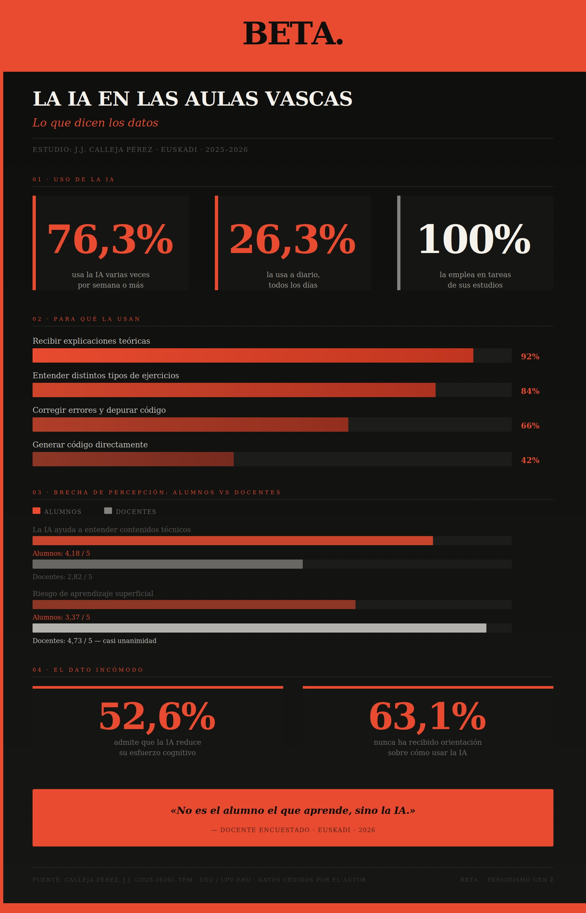

Economía nuestra
Economía nuestra
El punto de partida
Euskadi cuenta con más de 380.000 alumnos dentro de un sistema educativo conformado por alrededor de 1.200 centros cuya realidad se ha visto impactada en los últimos años por la transformación digital y las perspectivas que abre la inteligencia artificial.
La respuesta institucional no tardó: el Departamento de Educación presentó junto a Elhuyar la Guía para el Uso de las Inteligencias Artificiales en el ámbito educativo, contrastada con 18 profesores de centros públicos vascos y expertos en TIC. Sus dos principios rectores son poner en el centro el desarrollo del alumno y no sustituir las relaciones presenciales. Sobre el papel, impecable. En la práctica, la realidad de cada aula es otra historia.
Lo que dicen los datos: los estudiantes ya están dentro
Una investigación realizada durante el curso 2025-2026 en el CIFP Elorrieta Erreka Mari de Bilbao, concretamente en el área de Informática y Comunicaciones, arroja un retrato muy claro: la IA generativa no es algo que se esté debatiendo si introducir en las aulas, ya está dentro. El estudio, elaborado por Jesús Javier Calleja Pérez para su Trabajo de Fin de Máster y cuyos datos han sido cedidos para este reportaje, recoge las respuestas de 38 alumnos y 11 docentes de tres especialidades: Desarrollo de Aplicaciones Multiplataforma, Desarrollo de Aplicaciones Web y Administración de Sistemas en Red.
92%
Del alumnado usa la IA para recibir explicaciones teóricas. El 84% la usa para entender
distintos tipos de ejercicios. Lo usan principalmente como tutor permanente, no como atajo para entregar
trabajos.
El 76,3% del alumnado encuestado usa la IA varias veces a la semana o más, y un 26,3% lo hace a diario. El 100% la emplea en tareas relacionadas con sus estudios. Los usos más frecuentes son recibir explicaciones teóricas (92%) y entender distintos tipos de ejercicios (84%), lo que apunta a que los estudiantes la usan principalmente como tutor permanente, no como atajo para entregar trabajos. Pero hay una lectura más incómoda: el 52,6% del alumnado admite que la IA reduce su esfuerzo cognitivo, y el 47,7% reconoce que a veces genera una sensación de aprendizaje superficial. Lo saben. Lo admiten. Y la siguen usando.

La brecha entre lo que ven los estudiantes y lo que ven los docentes
El mismo estudio revela una fractura de percepciones llamativa. Mientras los estudiantes valoran la IA principalmente como herramienta de comprensión (con una puntuación media de 4,18 sobre 5), el profesorado es mucho más escéptico sobre sus beneficios, con puntuaciones que no superan el 2,82 en los mismos ítems. Sin embargo, en los riesgos cognitivos hay casi unanimidad entre los docentes: el aprendizaje superficial y la reducción del esfuerzo mental obtienen un 4,73 sobre 5 en preocupación. El 63,1% del alumnado nunca ha recibido ninguna orientación sobre cómo usar estas herramientas. Están aprendiendo solos, sin brújula.
4,73
Sobre 5: puntuación media del profesorado en preocupación por el aprendizaje superficial
y la reducción del esfuerzo cognitivo. Cerca del consenso absoluto.
Los docentes improvisando
Frente a esta realidad, el profesorado está respondiendo como puede, de forma individual y sin una estrategia coordinada de centro. Algunos han introducido defensas orales de distintos trabajos escolares para comprobar si el alumno realmente entiende lo que entrega. Otros han vuelto a exámenes sin acceso a internet. Hay quien ha subido el nivel de dificultad de las tareas anticipando que el alumnado usaría la IA, pero reconoce que el resultado ha sido peor: los estudiantes se apoyaron más en la herramienta y aprendieron menos.
«No es el alumno el que aprende, sino la IA.» — Docente del estudio
Ninguno describe una solución sistemática a nivel de centro. Todo son parches individuales y experimentales.
El problema real: no es la IA, es la desigualdad de acceso a orientación
La guía vasca advierte sobre riesgos concretos: protección insuficiente de datos, sesgos algorítmicos, opacidad en los modelos, dependencia tecnológica e impacto en la autonomía docente. Pero quizás el problema más silencioso no sea ninguno de esos. Es que la IA no está llegando igual a todos.
Un centro con profesorado formado y protocolo claro genera estudiantes que usan la herramienta de forma crítica. Un centro donde cada docente improvisa genera estudiantes que copian y pegan sin entender. La guía vasca existe, pero nadie está midiendo si se está aplicando, ni cómo, ni dónde.
¿Y los estudiantes?
Son los más afectados y los que mejor lo entienden. En el estudio, tanto alumnado como profesorado del CIFP Elorrieta Erreka Mari coinciden en que saber usar la IA generativa va a ser una competencia profesional imprescindible, pero con un matiz importante: siempre que esté construida sobre una base conceptual sólida.
Sin esa base, la herramienta no amplifica el aprendizaje, lo sustituye. La pregunta que el sistema educativo vasco todavía no ha sabido responder es si está preparando a esta generación para usar la IA de forma crítica, o simplemente para usarla.
Nota: Los datos del estudio empírico han sido proporcionados por Jesús Javier Calleja Pérez, quien ha autorizado expresamente su uso en este reportaje. El estudio fue realizado en un centro de Formacion Profesional de Bilbao durante el curso 2025-2026.